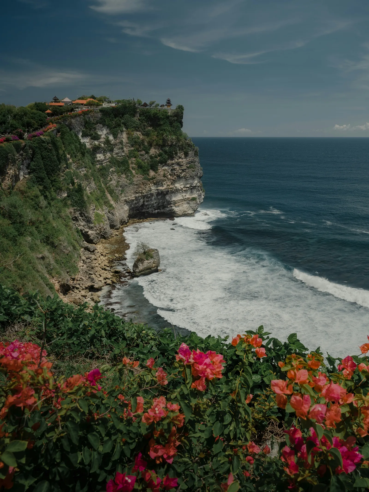
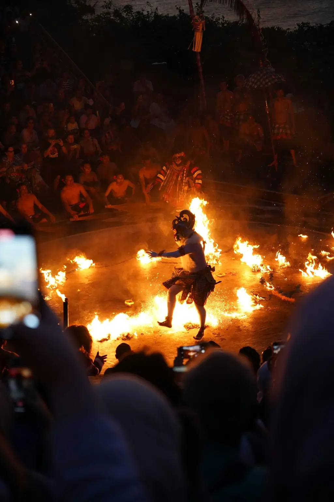
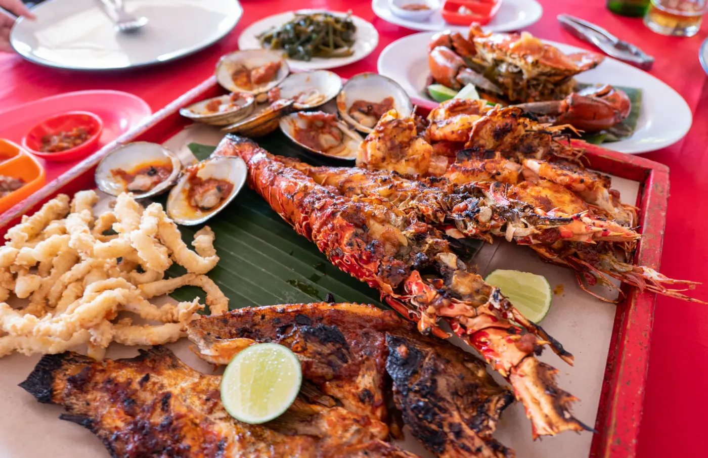

What You'll Do

Padang Padang Beach
A small cove reached by squeezing down a staircase through a gap in the rocks - famous from Eat Pray Love, loved by surfers, and a beautiful pocket of sand framed by cliffs and clear water.

Uluwatu Clifftop Temple
One of Bali's six key spiritual pillars, perched on a cliff 70 metres above the crashing surf. Walk the clifftop path for wide-open ocean views - and keep an eye on your belongings, the resident monkeys are famously cheeky.

Sunset Kecak Fire Dance
As the sun sets, more than seventy chanting men form a circle of sound around a ring of fire, retelling the Ramayana in one of Bali's best-known performances - with the sunset over the ocean right behind the stage.

Jimbaran Seafood Dinner (optional)
End the night with your toes in the sand at Jimbaran Bay, where grills line the beach and the day's fresh catch is cooked to order. Optional and paid on the spot - but a hard one to resist.